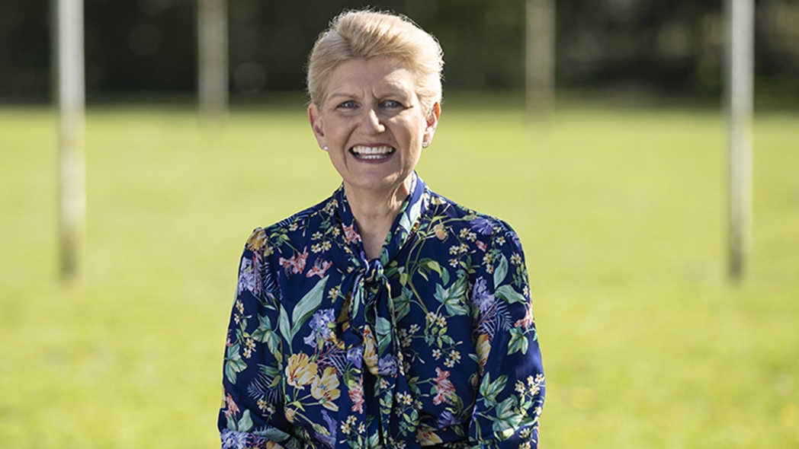
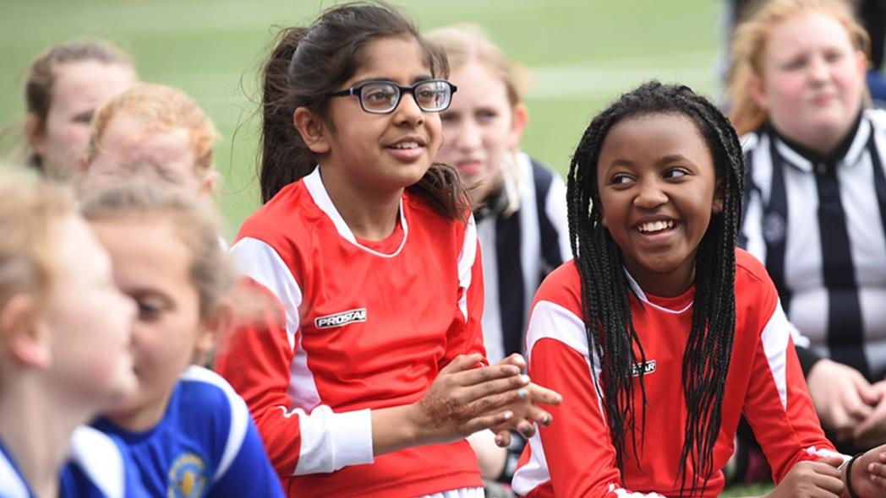
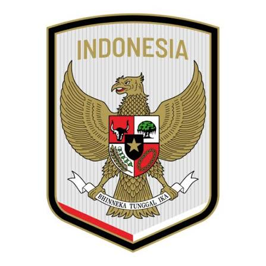

Jay Idzes
"Jay Noah Idzes is an indonesia professional footballer born on June 1,2000, who plays as center-back for serie A club sassuolo and captain the indonesia national team."
A football players of footballer is sportperson who one of the different typ of footballs
"Jay Noah Idzes is an indonesia professional footballer born on June 1,2000, who plays as center-back for serie A club sassuolo and captain the indonesia national team."

"Elkan William Tio Baggot is an indonesia professional footballer born on October 23,2002, who plays as center-back for EFL Championship MILL and captain the indonesia national team."

"Kevin Diks Bakarbessy is an indonesia professional footballer born on October 6,1996, who plays as right-back for Bundesliga club Borussia Monchengladbach and captain the indonesia national team."

"Calvin Ronal verdonk is an indonesia professional footballer born on April 26,1997, who plays as left-back for Ligue 1 club lille and the indonesia national team."

"Thom Jan Marinus haye is an indonesia professional footballer born on february 9,1997, who plays as Midfielder for Liga 1 club Persib badung and the indonesia nationnal team."

"Joey Suk Pelupessy is an indonesia professional footballer born on May 20,1993, who plays as Midfielder for Belgian Pro League club Lommel SK and the indoneisa nationnal team."

"Ivar Jenner is an indonesia professional footballer born on January 10,2004, who plays as MIdfeilder for liga 1 Indonesia club dewa united and the indonesia national team."

"Ole Lennard ter Haar Romenij is an indonesia professional footballer born on June 20,2000, who plays as Forward for Eredivisie club fortuna sittard and the indonesia nationnal team."

"Luke Anthony Vickery is an indonesia professional footballer born on October 25,2005, who plays as Forward for A-Legue Men club Macathur and the indonesia national team."

"Mitchell Lee Baker is an indonesia professional footballer born on Desember 11,2006, who plays as Forward for Liga 2 USL club Vermont and the indonesia national team."

"Emilio Audero Mulyadi is an indonesia professional footballer born on January 18,1997, who plays as goal-kiper for serie A club Como and the indonesia national team."

"Ragnar Oratmangun is an indonesia professional footballer born on January 21,1998, who plays as for forward liga 1 indonesia club persib bandung and captain the indoneisa national team."
Rules and regulations and instuction for dion sometings right

Rules are guidelines and instructions for doing something right. It is created to manage behavior in an organization or country. They are written principles.

It is created to manage behavior in an organization or country. They are written principles. On the other hand, regulations are directives made in addition to the laws in a particular country
Indonesia vs Thailand Fifa Asean Cup Final: indonesia national team win trophy, Match Highlight
Watch Live
By submmitting this from, you are agree and consent your personal data